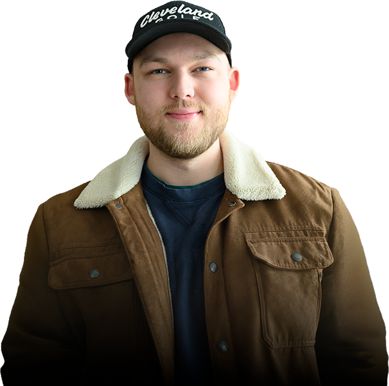

01
</>
Webudvikling
Design og udvikling af responsive hjemmesider med fokus på visuel identitet, brugeroplevelse og interaktion.
Multimediedesigner · Kreativ udvikler · Digital problemløser
Jeg arbejder i krydsfeltet mellem design, teknologi og kreative idéer. Jeg interesserer mig især for webudvikling, spil, grafisk design og digitale oplevelser, hvor det visuelle udtryk og funktionaliteten arbejder sammen.

Jeg er en engageret og nysgerrig multimediedesignstuderende, der godt kan lide at omsætte idéer til noget, man faktisk kan se, bruge og interagere med.
Jeg har stor interesse for både den kreative og tekniske side af digitale projekter. Det kan være alt fra at designe og kode en hjemmeside til at udvikle et spil, arbejde med 3D eller skabe grafisk indhold.
Før jeg begyndte på multimediedesign, havde jeg allerede erfaring fra flere forskellige arbejdspladser. Det har lært mig at møde til tiden, tage ansvar, arbejde selvstændigt og samtidig være en del af et hold.
Jeg er typen, der gerne undersøger, hvordan ting virker, eksperimenterer med nye værktøjer og bliver ved, indtil resultatet fungerer, som jeg havde forestillet mig.
Design og udvikling af responsive hjemmesider med fokus på visuel identitet, brugeroplevelse og interaktion.
Wireframes, prototyper, interfaces og grafiske universer udviklet med fokus på både stil og funktion.
Udvikling af mindre spil og interaktive oplevelser med fokus på gameplay, feedback og brugerens oplevelse.
Eksperimenter med 3D-modeller, produktdesign og visuelle elementer, både til web og fysiske projekter.
Zealand · Køge
Webudvikling, digitalt design, brugeroplevelser, kommunikation og interaktive løsninger.
Absalon · Slagelse
Påbegyndt uddannelse inden skiftet til den mere kreative og digitale retning.
Stenhus Gymnasium · Holbæk
EUC Nordvestsjælland · Holbæk
Ishøj · Sommerjob / deltid
Erfaring med fysisk arbejde, ansvar og samarbejde i en travl hverdag.
Svinninge · Sommerjob / deltid
Praktisk arbejde med ansvar, selvstændige opgaver og samarbejde.
Svinninge
Ishøj · Deltid
En stor del af min fritid handler om sport – især fodbold. Jeg interesserer mig samtidig for gaming, teknologi, 3D-print og forskellige projekter, hvor jeg kan bygge, designe eller eksperimentere med noget nyt.
Kombinationen af sport, kreativitet og teknik betyder også, at jeg både trives med samarbejde og med at fordybe mig selvstændigt i et problem.
Har du et projekt, en idé eller vil du bare høre mere om mit arbejde, så er du altid velkommen til at tage kontakt.
Kontakt mig ↗